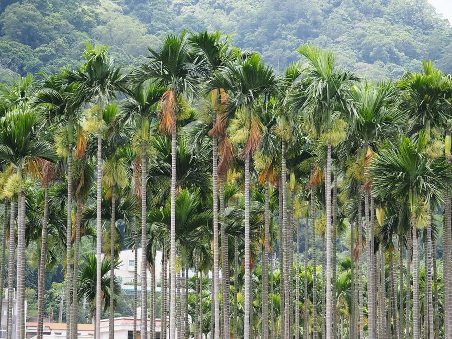

乔木 · 植物界
槟榔 Areca catechu

热带地区重要的经济棕榈，果实槟榔是传统咀嚼品，也是常用中药材，树干挺拔、羽状叶丛生于干顶，树形优美。
- 分类
- 门被子植物门纲百合纲目棕榈目科棕榈科属槟榔属
- 栖息环境
- 海拔 500 米以下的热带地区，喜高温多湿、光照充足
- 地理分布
- 原产马来西亚、印度尼西亚一带，中国海南、台湾、云南等地栽培
- 保护级别
- 暂无评估；中国未列入国家重点保护野生植物名录
物种志
槟榔为常绿乔木，高可达 20 m，树干通直、不分枝，表面有环状叶痕；羽状复叶长 1.5–2 m，小叶多数、线状披针形，先端不规则齿裂，叶鞘绿色。花期 3–5 月，肉穗花序生于叶鞘下方，雌雄同序；核果卵圆形或长圆形，长 3–5 cm，成熟时橙红色或黄褐色，内含 1 粒种子，即“槟榔子”。
槟榔原产马来西亚、印度尼西亚一带，中国海南、台湾、云南等地栽培，喜高温多湿、光照充足，适宜深厚肥沃、排水良好的热带土壤。果实是东南亚与南亚地区传统的咀嚼品，常与蒌叶、石灰一起嚼食，也是重要的中药材，种子含槟榔碱，有驱虫作用；树干可作建筑材料，叶可编席与制扇。需要提醒的是，长期嚼食槟榔与口腔癌风险相关，世界卫生组织已将其列为致癌物，应避免长期嚼食。
形态与习性
- 株高可达 20 m，树干通直
- 花期3–5 月，雌雄同序
- 果期12 月至翌年 5 月，核果橙红色
- 光照喜光，不耐长期荫蔽
- 水分喜湿润，怕积水
- 土壤深厚肥沃的热带土壤
- 主要用途果实药用与咀嚼、树干作建筑材料、叶编席制扇
趣味知识
- 槟榔的果实成熟时橙红色，内含 1 粒种子，就是中药材“槟榔子”。
- 长期嚼食槟榔与口腔癌风险相关，世界卫生组织已将槟榔列为致癌物。
- 槟榔树干通直、羽状叶丛生于干顶，是典型的热带棕榈形态。
- 槟榔在东南亚常与蒌叶、石灰一起嚼食，形成独特的咀嚼文化。